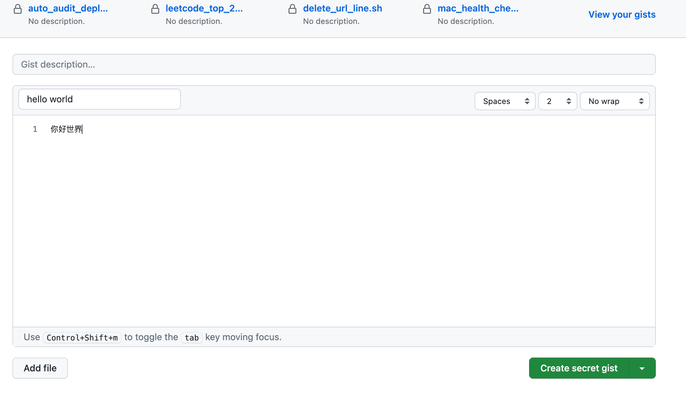
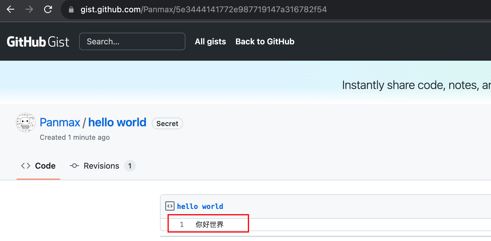
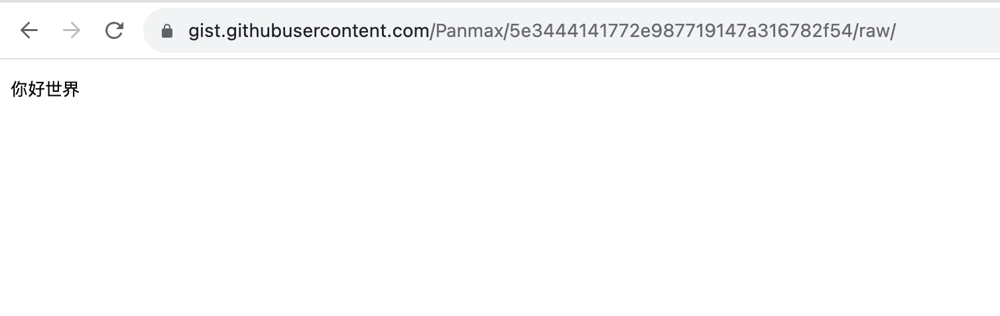

在上一篇文章中提到，我找到了一个非常方便的方法来管理token，那就是使用Github提供的 Gist 功能。
https://gist.github.com/ 是 Github 的一个子服务，通常用于托管或分享一些代码片段。与 git 不同的是，无需创建仓库，一个文件就是一个 gist。在打开 gist 首页后，可以直接填写文件描述和文件内容。

点击右下角会默认创建一个私密的 Gist，但它并不是真正的私密，Github 只是保证其他人在不知道这个 Gist 链接的情况下看不到其中的内容，且里面的内容不会被搜索引擎索引。当你分享这个 Gist 链接后，任何拿到链接的人都可以访问它。
例如，我刚刚创建的 gist 链接是：https://gist.github.com/Panmax/5e3444141772e987719147a316782f54
分享
通过浏览器的无痕模式打开这个链接：

编辑
如果我是这个文件的所有者，还可以对文件内容进行更新，在浏览界面点 edit 按钮，或者直接在 url 最后拼上 /edit 访问，如： https://gist.github.com/Panmax/5e3444141772e987719147a316782f54/edit 就可以进入编辑页面。
获取原始内容
链接尾部加上 /raw 可以取得原始内容。
如：https://gist.githubusercontent.com/Panmax/5e3444141772e987719147a316782f54/raw/

通过上述特性，我们可以将Gist用作动态配置的管理工具。
程序可以通过使用 /raw 获取动态内容，我们可以使用 /edit 页面更新内容。理论上，只要不泄露 Gist 链接，您的内容就不会泄露。当然，还要确保源代码不会泄露。
有些人可能认为这样不安全，因为数据存放在互联网上，获取链接的人就可以访问数据。
但我不这样认为。我们可以将 Gist 链接后面的路径看作数字钱包的私钥。如果你泄露了私钥，谁也帮不了你。只要你妥善保管私钥，通常情况下就没有问题。通过碰撞来暴力破解路径的成本极高，而且里面的内容大部分情况下只是一个简单的代码片段，比数字钱包私钥的价值要小得多。所以黑客们不会费力不讨好地去破解这个东西。